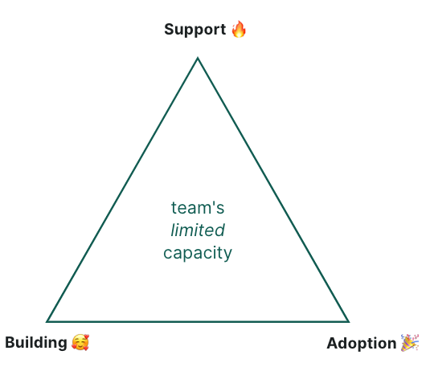
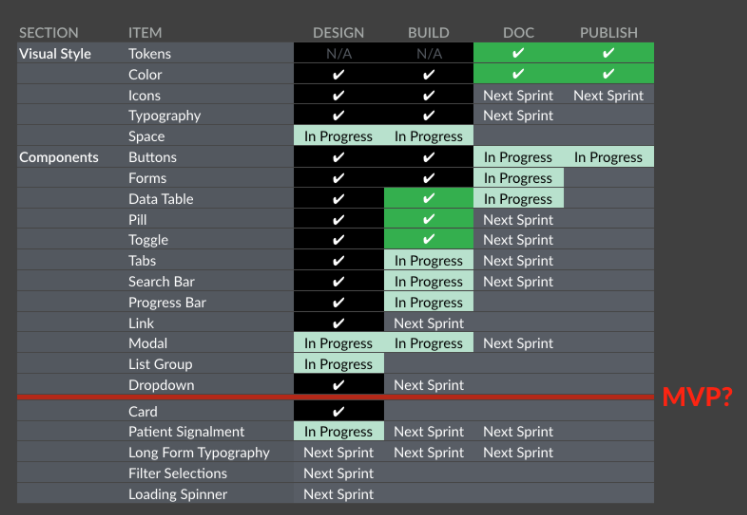
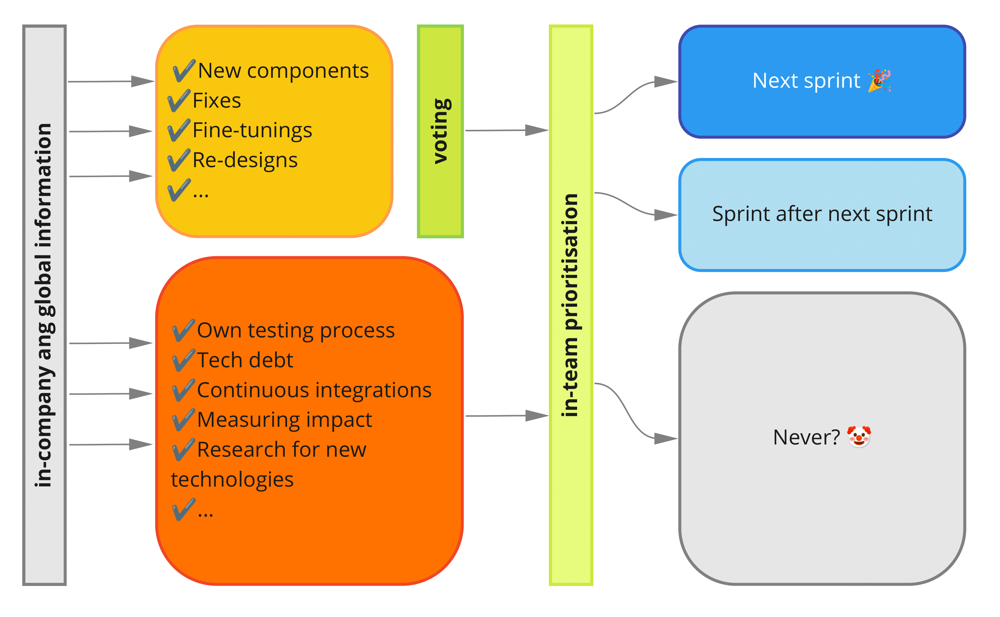

Increasing design system quality and adoption by proper stakeholder management
Increasing design system quality and adoption by proper stakeholder management

Place tizer here
Varya Stepanova @ Smartly DevTalks 2021
Me
Varya Stepanova
Design Systems Architectengineering manager, frontend architect, independent consultant
Contacts
What does design system team do?
What does design system team REALLY do?
What does design system team REALLY do?
Design system work

User-centered design system resources
Lyft Design Systems Team @ Schema 2021
https://youtu.be/Pqm8LkB44gU
The product
- UI kit
- React Library
- Web Components Library
- Design tokens package
In and out
- Bug reports
- Feedback & suggestions
- Questions and help requests
- Releases
- Incident warnings
- Announces
Channels of Communication
- Design system website
- Slack/Flowdock/Teams
- GitHub
- Design & development forums
Clear picture of the system
What is available?
What component is available what is not?
What components are soon coming?
What is current status of a component?

Expectations
Expectation management is one of the most powerful weapons in psychological warfare.
Component status map

Idea from "Design System Features, Step-by-Step" by Nathan Curtis
See in action at Polaris design system
Status on the component page
Where in the flow is it? research/design/development/testing
What platforms is it available for? e.g Card @ Orbit)
Is it deprectaed? (e.g. Theme Swicth @ Wanda)
What is coming? (e.g. Avatar @ Lighning)
Communication about the process
Open backlog policy

What do we get?
- Open process and clear message about resources
- Ready contribution requests
- Knowledge of who is interested in a component
Managing stakeholders
Who is using a component?
Example link: http://bit.ly/ds-matrix-example
Tools for stakeholder management
- Excel / Google Sheets
- Google DataStuido
- Own solutions
Address to certain people personally
- Library has critical updates in particular components
- Ask for feedback about upcoming changes
- Someone is not using the component. Why?
- Design system team is searching for contributors
- Team search for other teams using the same component
Word of month
- Onboarding
- for designers
- for developers
Innovations - how to go?
- PoCs
- Asking for feedback
- Common sessions
How to enchance the contributions?
Let's look around (optional)
- Design system benchmarking
- Linking to the contributors
- Branding
- Positions in DS team
Up to the business levels
- The money talk
- Maturity models
What the talk is about

How a design system team asked for more resources
Based on a true story
Actually
The value of design system is not clear
Design system is a great thing! But how much exactly?
Business has no idea how DS is helping
Everyone has a deisgn system, so do we. How much it helps us? I dunno...
DS team operates feelings not numbers
We are doing great! But this is not knowledge supported by data :-(
Growing from seed
Measuring a design system
Why? What? How?
When?
Timeline
Measuring production costs
to reflect, how easier (and more cost-effective) the life is for the projects
Costs and savings w/o DS
1 component, 1 project
$ = production time + (support costs * component lifetime)
same component, many projects
$ = (
production time + (support costs * component lifetime)
) * amount of projects
Costs and savings /w DS
1 component, in the design system
$ = production time + (support costs * component lifetime)
same component, at the projects
$ = integration costs * amount of projects
altogether
$ = $(design system) + $(projects)
Where to get this data from?
production time — survey, tracker, documented time
support costs - estimation
integration costs - survey, tracker, documented, estimation
component lifetime - git history, data from design files
amount of projects - github search, figma data, survey
Example: button component
production time = 10 h integration costs = 2h
support costs = 20 h/year amount of projects = 5
component lifetime = 3 years
costs and savings
$(without ds) = (10h + 20h*3y)*5 = 350h
$(with ds) = (10h + 20h*3y) + 2h*5 = 80h
SAVED ON THE BUTTON FOR 3 YEARS: 350h - 80h = 270h
How accurate is that?
The formulas don't have to be perfect.
They help to start a conversation with the business.
Together, you will co-create better formulas for your paricular organisation.
Costs formula, whole system
Cost savings: 752 hours = 18.8 weeks = 4 months
WOW{ .shout }
Measuring the past
1. Production costs
2. Availability of a design system
How easy to start? How fast are updates? Quality of documenttaion. Level of support needed.
3. Involvement and contributions
Design system's acceptance. Level of contributions.
Measuring the process of DS
to reflect, how DS resources are used and if they correspond to the workload
Workload estimation
Learn backlog capacity
"Compund" number, can be obtained from JIRA, GitHub issues, etc.
Apply given resources
Let's count our chickens
With numbers, we can
- Set up goals
- Build hypothesis
- Validate
- Speak to the business
Timeline
Measuring the reality
To get instant guidance towards right direction
Same data
But instantly available
Where to store the data?
- Company wiki
- Intranet website
- Documenting system
Was not good for the business people
Shared office solutions
Excel (cloud) / Google Sheets
What DS components are used at the projects
Search script (GitHub API) -> CSV -> Excel
Other options
Figma stats ->
Surveys -> Excel
Code analysis ->
How design system is doing?
Example link: http://bit.ly/ds-matrix-example
Workflows
Workflow examples
- Library has critical updates in particular components
- Ask teams about upcoming changes
- Someone is not using the component. Why?
- Design system team is searching for contributors
- Team search for other teams using the same component
Stakeholders
Stakeholders in teams
💡 Color-coded based on the recent survey
Stakeholders on business levels
Link data and people
Open in-company solution
Data and the tool available for everyone in the company
For the design system team
For the teams to connect
For business people
Timeline
Who?
Get data from people
| at project | in ds | at business level |
|---|---|---|
| how much ds helps? | production costs | how do we count? |
| integration costs | support costs | upcoming challenges |
| ui coverage | are contributions enough? |
Are you sartisfied?
How we could help?
Can you help us?
Design Systems are for people
Also available in a text version
Why? What? How? For whom?
Making design systems successful is just as much about creating a people system as it is about creating a technical or operational one.
To build a design system, don’t start by writing code and choosing tools; start by talking to the people who will use the system. Learn about their needs and constraints, and help them solve problems.